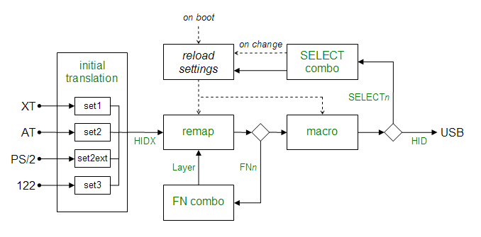

This diagram gives an simplified view of the processing stages inside the converter:

The first stage is a fixed translation into HID codes, that cannot be modified by the config. The goal of this stage is to map into a reasonable base set of codes for further remapping, and to try and ensure that each key on the keyboard results in a unique HID code after this stage.
The second stage combines remapping and layer functions, since layers are simply alternate remappings.
The third stage is macro expansion.
The final stage separates out the internal commands such as SELECTn and BOOT etc. and routes them appropriately, and also converts the HIDX codes back into standard HID codes for the keyboard, media, and power code pages.
The force command disables the auto-detection of keyboard type. It is only very rarely needed!
force {set1|set2|set3|set2ext}
Example:
force set2
The include command processes another file, exactly as if it was copy-pasted to where the include command is.
include <file_name>
Quotation marks are optional unless the file name contains spaces.
Example:
include "colemak.sc"
Groups of settings can be toggled by using the ifselect command and defining remaps or macros that output the SELECT_0 to SELECT_7 codes.
ifselect {<select_num> | any}
When any of the SELECT codes are output the entire config is reloaded, and the ifselect commands choose which blocks will be applied.
When the converter powers-up, all selects, except select 0, are inactive.
Multiple selects can be active at a time.
Select 0 is special - it is always active, and when SELECT_0 is output it resets all the other selects.
Blocks following ifselect <select_num>, up to the next ifselect, are applied only if the specified select is active.
Blocks following ifselect any, up to the next ifselect, are applied regardless of which selects are active.
Example:
# toggle between qwerty and colemak by pressing scroll lock
ifselect 1
include colemak.sc
ifselect any
remapblock
SCROLL_LOCK SELECT_1
endblock
Blocks following the ifset command are only applied if using one of the specified sets.
ifset [set1] [set2] [set3] [set2ext] [any]
Example:
ifset set1 set2
Blocks following the ifkeyboard command are only applied if the keyboard has the specified ID.
ifkeyboard {<keyboard_id> | any}
The keyboard ID is given in hexadecimal.
See the Troubleshooting section for details of how to find out the ID of your keyboard.
Example:
ifkeyboard BABA
Layerblocks define combinations of function keys to access different layers.
layerblock
<fn_key_combo> <layer_num>
...
endblock
Function keys are defined by remapping keys to codes FN1 to FN8.
Example:
layerblock
FN1 1
FN2 1
FN1 FN2 2
endblock
remapblock
LGUI FN1
RGUI FN2
endblock
Remapblocks define remappings either for the base layer, or for the specified
layer if a layer command is given inside the block.
remapblock
[layer <layer_num>]
<from_hid> <to_hid>
...
endblock
Example:
# swap capslock and backspace
remapblock
CAPS_LOCK BACKSPACE
BACKSPACE CAPS_LOCK
endblock
Macroblocks define one or more macros. Macros are triggered by a single HID key with any combination of metas, and can have command blocks that execute on make and/or break of the HID key.
macroblock
macro <hid> [[-][{l|r}]shift] [[-][{l|r}]ctrl] [[-][{l|r}]alt] [[-][{l|r}]gui] ...
[
<command> [<value>]
...
]
[onbreak [norestoremeta]
<command> [<value>]
...
]
endmacro
...
endblock
Example:
macroblock
macro SCROLL_LOCK LSHIFT LCTRL -ALT
PUSH_META CLEAR_META all # save and clear all metas
PRESS p # press some keys...
PRESS i
PRESS N # case is ignored - this results in lowercase 'n'
SET_META lshift # you have to set modifiers yourself
PRESS g # results in a capital 'G', since shift is set
POP_ALL_META # restore metas that were active before
endmacro
endblock
| Command | Description |
|---|---|
| NOP | Does nothing |
| PRESS <hid> | Shorthand for MAKE <hid> then BREAK <hid> |
| MAKE <hid> | Set keystate to 'down' |
| BREAK <hid> | Set keystate to 'up' |
| ASSIGN_META <metas> | Set all metas to the state specified |
| SET_META <metas> | Set specified metas to down state |
| CLEAR_META <metas> | Set specified metas to up state |
| TOGGLE_META <metas> | Set specified metas to inverse of current state |
| POP_META | Restore metas from the time of the last PUSH_META |
| POP_ALL_META | Restore metas from the time of the first PUSH_META |
| DELAY <delay_in_ms> | Delay by the specified number of milliseconds |
| CLEAR_ALL | (internal use e.g. when buffer overrun is received) |
| BOOT | Cause the converter to jump to the bootloader v1.0+ |
| PUSH_META <cmd> <value> | Save metas for later. Combines with other commands |
Macros are triggered only when the state matches for all of the the specified metas.
If a particular meta is not specified, its state is not matched.
| Meta | Trigger condition |
|---|---|
| LSHIFT | LSHIFT is pressed |
| RSHIFT | RSHIFT is pressed |
| SHIFT | Either LSHIFT or RSHIFT is pressed |
| -LSHIFT | LSHIFT is not pressed |
When looking for a match, macros are checked in the order they appear in the config file.
The first matching macro found (if any) is executed, so you sometimes need to take of what order the macros are in.
macroblock
macro SCROLL_LOCK LSHIFT # this macro will execute even if LCTRL is down, so...
...
endmacro
macro SCROLL_LOCK LSHIFT LCTRL # ... this macro will never execute!
...
endmacro
endblock
The correct order would be:
macroblock
macro SCROLL_LOCK LSHIFT LCTRL
...
endmacro
macro SCROLL_LOCK LSHIFT
...
endmacro
endblock
See the HID code list for HID and META values.